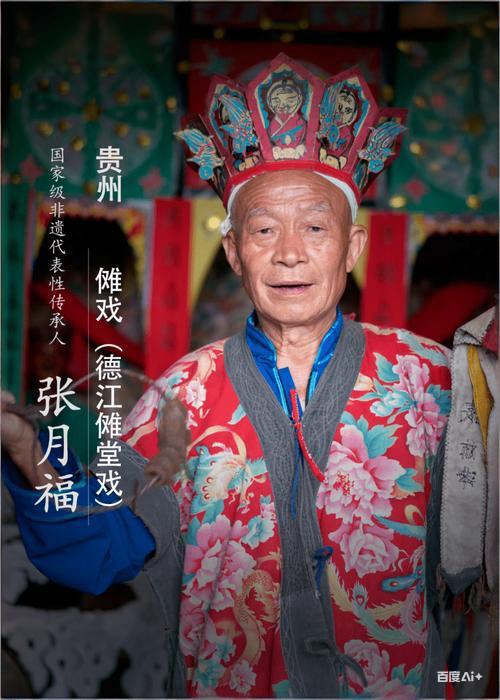
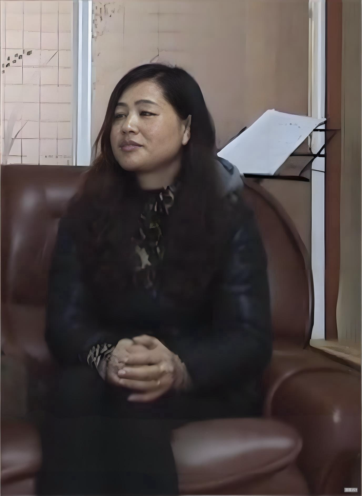
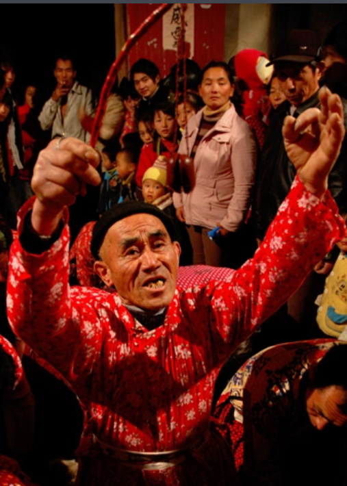

傩文化的传承离不开一代又一代守艺人的默默奉献，他们用自己的心血和汗水守护着这份珍贵的文化遗产。
他们是傩戏文化的活态载体，用一生的坚守传递着千年技艺与文化记忆

从艺50余年的傩戏大师，精通傩戏表演、面具雕刻与唱腔。培养了20余名年轻传承人，为傩戏的活态传承做出卓越贡献。
代表作品：《开山莽将》《钟馗斩鬼》《关公斩妖》等经典剧目。曾赴法国、日本等多国进行文化交流演出，被誉为"中国傩戏活化石"。

沅陵辰州傩戏首位女性传承人,她将女性视角融入表演，创新唱腔与动作，使女性角色更加鲜活。她积极走进校园和社区开展教学与公益演出，致力于傩戏的活态传承。
演出的傩戏传统剧目包括《姜女晒衣》《捡菌子》《姜女下池》《观花教子》《卖猪》等。
贵池傩戏世家第五代传人，不仅精通传统剧目，还创新编导多部现代题材傩戏。建立傩戏传习所，免费授徒百余人。
创新成果：将傩戏与黄梅戏唱腔融合，创作《乡村振兴》《抗疫英雄》等现代傩戏作品，推动傩戏的当代发展。

自1959年加入石邮村傩班，逐步晋升至最高职务"大伯"。他擅长《开山》《雷公》等傩舞，曾多次率队赴日本、法国等国进行文化交流。
他培养了新一代徒弟，并参与《傩情》等创新演出，其技艺和口述史已被国家图书馆建档保存。
在保护傩戏本真性的基础上，通过创新设计赋予其当代生命力
以傩戏"开山莽将"、"钟馗"、"孟姜女"等经典角色为原型进行二次创作。在保留传统元素基础上，融入赛博朋克、国潮等现代审美。